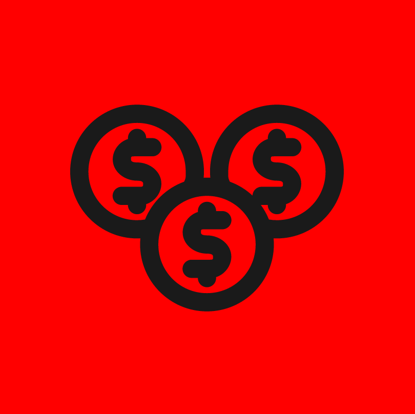

| Authority (Kratos) | Rank (Archy) | Nationalism | Economic Aspiration | Economic Control | Diplomacy |
|  | |||||
|
|
|

6values is, in essence, a political quiz that attempts to assign percentages for eight different political values. You will be presented by a statement, and then you will answer with your opinion on the statement, from Strongly Agree to Strongly Disagree, with each answer slightly affecting your scores. At the end of the quiz, your answers will be compared to the maximum possible for each value, thus giving you a percentage. Answer honestly!
There are questions in the test.
There are six independent axes - Authority, Archy (Rank), Nationalism, Economic Aspiration, Economic Control, and Diplomacy - and each has two opposing values assigned to them. They are:
Pro-Authority (Kratos)
Those with higher Authority scores believe in strong state power (Kratos). They tend to support state intervention in personal lives, government surveillance, and at high values, censorship or autocracy.
Anti-Authority (Kratos)
Those with lower Authority scores believe in stronger individual liberty and weak state power (Akrateia). They tend to support democracy and oppose state intervention in personal lives. Note that this refers to civil liberties, not economic liberties.
Pro-Archy or Pro-Rank (Archos)
Those with high Archy (from Greek arkhos "leader, chief, ruler,") scores believe in respect for Rank or Hierarchy in society. They support the Rank of religious leaders, community leaders and patriarchy, and support the status quo or the status quo ante.
Anti-Archy or Anti-Rank (Archos)
Those with low Archy scores believe in an egalitarian society. They want to upturn the existing order and would like to promote the rights of women, minorities and other traditionally opressed classes.
Civic Identity or Civic Nationalism (Citizenry)
Civic nationalism defines the nation as an association of people with equal and shared political rights, and allegiance to similar political procedures. Thus the nation is defined on the basis of the compact between citizens and the state. The compact is not tied to a specific ethnicity or culture.
Ethnic Identity or Ethnic Nationalism (Citizenry)
Ethnic nationalism specifically seeks to unite all people of a certain ethnicity heritage together. Stemming from a common ethnic, religious, linguistic or cultural background is considered the backbone of the nation state.
Economic Efficiency(Economic Efficiency)
Those with a high Economic Efficiency score prefer open and efficient markets to create the greatest output a nation can muster. They tend to support lower taxes, privatization, deregulation, and at high values, laissez-faire capitalism.
Economic Equity(Economic Efficiency)
Those with a low Economic Efficiency score (and thus high Economic Equity score) score seek to create an economically just society. They tend to support progressive tax, social programs, and a safety net of services provided by the state for its citizens.
Economic Control of Labor(Economic Control)
Those with a high score for the Economic Control of Labor prefer to control labor and workers to control and direct the economy. They do not prefer trade and labor unions and believe businesses should be free to hire and fire.
Economic Control of Capital(Economic Control)
Those with a high score for the Economic Control of Capital prefer to control capital and the means of production to control and direct the economy. They would prefer that capital and the means of production be deployed in service to the nation's economic goals whether they be to increase the output & efficiency or to improve economic equity. This control at high levels leads to "crony capitalism" with the selection of winners and losers.
Cosmopolitanism (Diplomacy)
Those with higher Cosmopolitanism scores are cosmopolitan and favor global trade and integration. They often believe in an active foreign policy, emphasizing diplomacy or military strength, cooperation, integration, and at high values, territorial expansion or even a world government.
Autarky (Diplomacy)
Those with higher Autarky (From the Greek: auto-arkei - "self-sufficiency") scores are patriotic and nationalist. They often believe in an isolationist foreign policy, valuing the military for defense, sovereignty.
In addition to matching you to the eight values, the quiz also attempts to match you to a political ideology. This is a work in progress and is much less accurate than the values and axes, so don't take it too seriously. If you disagree with your assigned ideology, send us an email at eightvalues@gmail.com with your scores, matched ideology, and preferred ideology, and we'll look into adjusting the system. Thanks!
¯\_(ツ)_/¯
If you have any suggestions or constructive criticism, feel free to send it to eightvalues@gmail.com or open an issue on the GitHub page here: GitHub Page